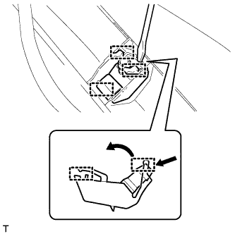

WASHER NOZZLE (for Front Side) > REMOVAL |
| 1. DISCONNECT CABLE FROM NEGATIVE BATTERY TERMINAL |
| 2. REMOVE UPPER RADIATOR SUPPORT SEAL |
Remove the 7 clips and radiator support seal.

| 3. REMOVE FRONT FENDER MAIN SEAL LH |
 |
Using a clip remover, detach the 3 clips and remove the fender main seal.
| 4. REMOVE FRONT FENDER MAIN SEAL RH |
| 5. REMOVE FRONT WIPER ARM LH |
Remove the nut, wiper arm and blade.
| 6. REMOVE FRONT WIPER ARM RH |
Remove the nut, wiper arm and blade.
| 7. REMOVE HOOD TO COWL TOP SEAL |
 |
Using a clip remover, detach the 12 clips, 4 clamps and remove the hood to cowl top seal.
| 8. REMOVE COWL TOP VENTILATOR LOUVER SUB-ASSEMBLY |
 |
Remove the washer hose.
 |
Remove the 2 clips.
Detach the 17 claws and remove the cowl top ventilator louver sub-assembly.
| 9. REMOVE WASHER NOZZLE SUB-ASSEMBLY |
 |
Detach the 3 claws and remove the washer nozzle.
Disconnect the hose.